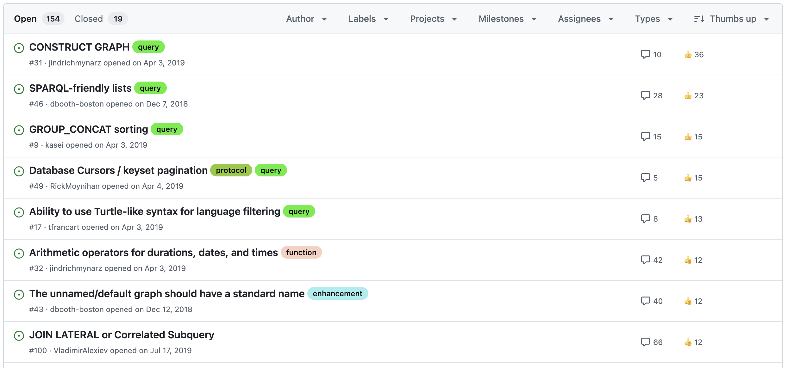

Syntax remains aligned with Turtle.
VERSION "1.2"
PREFIX : <http://example.com/ns#>
PREFIX rdf: <http://www.w3.org/1999/02/22-rdf-syntax-ns#>
SELECT ?person ?authority {
_:r rdf:reifies <<( ?person :jobTitle "Designer" )>> .
_:r :accordingTo ?authority .
}
Triple terms are rarely used directly.
SELECT ?person ?authority {
<< ?person :jobTitle "Designer" >>
:accordingTo ?authority .
}
Expands to:
SELECT ?person ?authority {
_:r rdf:reifies <<( ?person :jobTitle "Designer" )>> .
_:r :accordingTo ?authority .
}
Reifier can be IRIs, blank nodes, or variables.
SELECT ?person ?authority {
<< ?person :jobTitle "Designer" ~ :id >>
:accordingTo ?authority .
}
The annotation syntax.
SELECT ?p ?auth ?date {
?p :jobTitle ?title {| :accordingTo ?auth; :recorded ?date |} .
}
Expands to:
SELECT ?p ?auth ?date {
?p :jobTitle ?title .
<< ?p :jobTitle ?title >> :accordingTo ?auth ;
:recorded ?date .
}
To be used within expressions (FILTER, BIND, …)
TRIPLE(subj, pred, obj) Triple term expressionSUBJECT(triple-term) Get subject of triple termPREDICATE(triple-term) Get predicate of triple termOBJECT(triple-term) Get object of triple termisTRIPLE(term) If this is a triple termUsing BIND, triple terms can be bound to a variable.
→ Lookup all asserted reifying triples
SELECT ?tt ?date {
?s ?p ?o .
BIND( TRIPLE(?s, ?p, ?o) AS ?tt )
?reifier rdf:reifies ?tt .
?reifier :tripleAdded ?date .
}
TRIPLE can also be written using the “<<( … )>>” shorthand.
SELECT ?tt ?date {
?s ?p ?o .
BIND( <<( ?s ?p ?o )>> AS ?tt )
?reifier rdf:reifies ?tt .
?reifier :tripleAdded ?date .
}
Limitation: no sub-expressions allowed within this shorthand.
BIND( TRIPLE(?s, ?p, STR(?o)) AS ?tt )BIND( <<( ?s ?p STR(?o) )>> AS ?tt )Using SUBJECT, the subject of a triple term is returned.
SELECT ?s {
:id rdf:reifies ?tt .
BIND(SUBJECT(?tt) AS ?s)
}
Introduction of triple terms has an impact on all of them:
sameTerm(term1, term2)True if terms are the same RDF term.
term1 = term2 (sameValue)True if terms correspond to the same value.
sameValue(term1, term2) (called RDFterm-equal in SPARQL 1.1).| Expression | Result |
|---|---|
sameTerm(123, 123) |
true |
sameTerm(123, 123.0) |
false |
sameTerm(<<(:s :p 123)>>, <<(:s :p 123.0)>>) |
false |
123 = 123 |
true |
123 = 123.0 |
true |
<<(:s :p 123)>> = <<(:s :p 123.0)>> |
true |
“<” operator is used for directly comparable terms. Otherwise, incomparable terms are sorted in this order:
{
"head": { "vars": [ "x", "name", "triple" ] },
"results": {
"bindings": [
{
"x": { "type": "bnode", "value": "r1" },
"name": { "type": "literal", "value": "Alice" },
"triple": {
"type": "triple",
"value": {
"subject": { "type": "uri", "value": "http://example.org/alice" },
"predicate": { "type": "uri", "value": "http://example.org/name" },
"object": { "type": "literal", "value": "Alice", "datatype": "..." }
}
}
}
]
}
}
<?xml version="1.0"?>
<sparql ...>
<head> ... </head>
<results>
<result>
<binding name="x"><bnode>r2</bnode></binding>
<binding name="name"><literal xml:lang="en">Bob</literal></binding>
<binding name="triple">
<triple>
<subject><uri>http://example.org/alice</uri></subject>
<predicate><uri>http://example.org/name</uri></predicate>
<object><literal
datatype="http://www.w3.org/2001/XMLSchema#string">Alice</literal></object>
</triple>
</binding>
</result>
</results>
</sparql>
| x | triple |
| Alice | <<( http://example/alice http://example/knows http://example/bob )>> |
| Bob | <<( http://example/bob http://example/knows http://example/alice )>> |
| Carol | <<( http://example/carol http://example/says "Hello world, my name is Alice." )>> |
Warning: SPARQL CSV is lossy! (no data types)
| ?x | ?triple |
| "Alice" | <<( <http://example/alice> <http://example/knows> <http://example/bob> )>> |
| "Bob" | <<( <http://example/bob> <http://example/knows> <http://example/alice> )>> |
| "Carol" | <<( <http://example/carol> <http://example/says> "Hello world, my name is Alice". )>> |
text/turtle.Also painful for clients to manage during content negotiation
(+CORS: 128 char header value limit).
VERSION keyword for Turtle-like syntaxes (incl. SPARQL).VERSION "1.2"
PREFIX : <http://example.com/>
PREFIX xsd: <http://www.w3.org/2001/XMLSchema#>
:a :name "Alice" ~ :t {| :statedBy :bob |} .
GET /document.ttl HTTP/1.1 Host: example.com Accept: text/turtle; version=1.2 HTTP/1.1 200 OK Content-Type: text/turtle; version=1.2
Media type parameter
| Version label | Description |
|---|---|
| "1.2" | RDF 1.2 syntax |
| "1.2-basic" | RDF 1.2 syntax without triple terms |
| "1.1" | RDF 1.1 syntax except for use of a version directive |
:a :name "Alice"@en--ltrrdf:dirLangStringltr: left-to-rightrtl: right-to-leftLANG() Get language of a literal (EXTENDED)LANGDIR() Get base direction of a literal (NEW)hasLANG() If term is literal with language (EXTENDED)hasLANGDIR() If term is literal with base direction (NEW)STRLANGDIR() Make literal with value, language, and base direction (NEW)For testing if some data does (not) exist.
PREFIX rdf: <http://www.w3.org/1999/02/22-rdf-syntax-ns#>
PREFIX foaf: <http://xmlns.com/foaf/0.1/>
SELECT ?person WHERE {
?person rdf:type foaf:Person .
FILTER EXISTS { ?person foaf:name ?name }
}
Outcome of the SPARQL EXISTS W3C community group:
The target term of BIND must always be a variable.
SELECT ?person WHERE {
?person rdf:type foaf:Person .
FILTER EXISTS { BIND ( :p AS ?person ) }
}
Projection with SELECT must always be a variable.
SELECT ?person WHERE {
?person rdf:type foaf:Person .
FILTER EXISTS { SELECT ?person { :a :b ?person } }
}
Different interpretations lead to inconsistent behaviour across SPARQL engines.
https://github.com/w3c/rdf-tests/
Declarative set of tests to measure conformance of a system.
New tests for:
